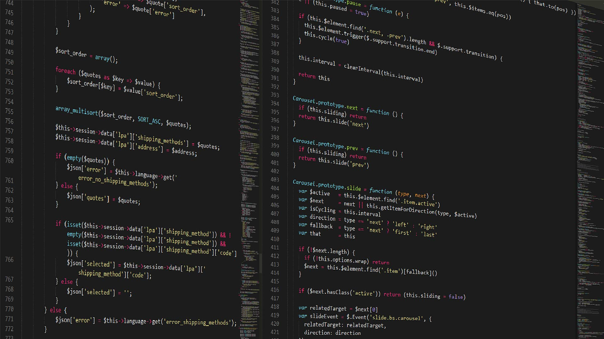

 XML XML, siglas en inglés de eXtensible Markup Language, traducido como 'Lenguaje de Marcado Extensible' o 'Lenguaje de Marcas Extensible', es un metalenguaje que permite definir lenguajes de marcas desarrollado por el World Wide Web Consortium (W3C) utilizado para almacenar datos en forma legible. Proviene del lenguaje SGML y permite definir la gramática de lenguajes específicos (de la misma manera que HTML es a su vez un lenguaje definido por SGML) para estructurar documentos grandes. A diferencia de otros lenguajes, XML da soporte a bases de datos, siendo útil cuando varias aplicaciones deben comunicarse entre sí o integrar información. XML no ha nacido únicamente para su aplicación en Internet, sino que se propone como un estándar para el intercambio de información estructurada entre diferentes plataformas. Se puede usar en bases de datos, editores de texto, hojas de cálculo y casi cualquier cosa imaginable. XML es una tecnología sencilla que tiene a su alrededor otras que la complementan y la hacen mucho más grande, con unas posibilidades mucho mayores. Tiene un papel muy importante en la actualidad ya que permite la compatibilidad entre sistemas para compartir la información de una manera segura, fiable y fácil. Los documentos han de seguir una estructura estrictamente jerárquica con lo que respecta a las etiquetas que delimitan sus elementos. Una etiqueta debe estar correctamente incluida en otra, es decir, las etiquetas deben estar correctamente anidadas. Los elementos con contenido deben estar correctamente cerrados. Más Información
HTML HTML, siglas en inglés de HyperText Markup Language (‘lenguaje de marcado de hipertexto’), hace referencia al lenguaje de marcado para la elaboración de páginas web. Es un estándar que sirve de referencia del software que conecta con la elaboración de páginas web en sus diferentes versiones, define una estructura básica y un código (denominado código HTML) para la definición de contenido de una página web, como texto, imágenes, videos, juegos, entre otros. Es un estándar a cargo del World Wide Web Consortium (W3C) o Consorcio WWW, organización dedicada a la estandarización de casi todas las tecnologías ligadas a la web, sobre todo en lo referente a su escritura e interpretación. HTML se considera el lenguaje web más importante siendo su invención crucial en la aparición, desarrollo y expansión de la World Wide Web (WWW). El lenguaje HTML basa su filosofía de desarrollo en la diferenciación. Para añadir un elemento externo a la página (imagen, vídeo, script, entre otros.), este no se incrusta directamente en el código de la página, sino que se hace una referencia a la ubicación de dicho elemento mediante texto. De este modo, la página web contiene solamente texto mientras que recae en el navegador web (interpretador del código) la tarea de unir todos los elementos y visualizar la página final. Al ser un estándar, HTML busca ser un lenguaje que permita que cualquier página web escrita en una determinada versión, pueda ser interpretada de la misma forma (estándar) por cualquier navegador web actualizado. HTML es un lenguaje de marcado que nos permite indicar la estructura de nuestro documento mediante etiquetas. Más Información